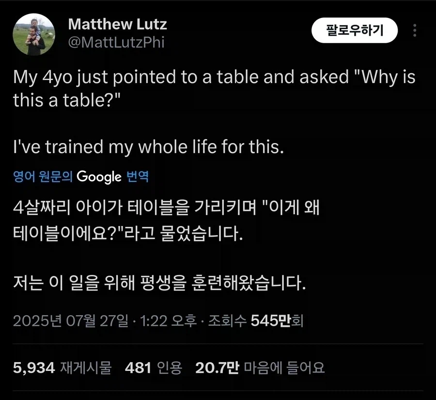

좆됐다... 잘못건드렸네

좆됐다... 잘못건드렸네
왜요? 왜요? 왜요? 그래서 왜요? 왜요? 왜요? 왜요? 왜요? 아저씨 별로 재미 없네요.
그게 사회적 약속이에요
My 4yr old = 네살 된 내 새끼
철학자 씨 심으면 철학 꿈나무가 자란다
꿈나무 맞지?
그래 이 이야기는 고대 그리스에서 시작된단다
인생 실전이야 ㅈㅁ아
무한 왜? 시전
ㅋㅋㅋㅋㅋ
아기 : 엄마가 탁자랬는데 왜 이상하게 불러요?
철학ㅈ : 뉴비
내가 동생 아기 때 뭐 하나 물어보면 자리잡고 앉아서 30분씩 설명해 주고, 신나서 다른 것도 설명해 줬음.
언젠가부터 나에게 아무것도 묻지 않더라.....
훈련(물리)